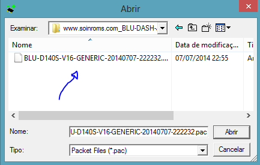

Instalar Stock rom Original de Fábrica Android 2.3 Gingerbread para o BLU DASH JR SOCIAL D140S
Iremos ver como resolver problemas como travamentos, lentidões, loop-infinito e também se seu dispositivo BLU DASH JR SOCIAL D140S foi infectado com vírus e não para de aparecer propagandas indesejáveis, lhe importunando toda hora... com esse procedimento além de voltar ao sistema original de Fábrica resolverá esses problemas.
# Amigo(a), nós do SO. IN ROMS não nos responsabilizamos por qualquer eventual erro ou dano que possa vir a ocorrer em seu dispositivo, por isso, siga por sua conta e risco! Para maiores informações queira clicar AQUI
Para esse tutorial baixe o ::
Drivers ResearchDownload Firmware para o BLU DASH JR SOCIAL D140SCom isto podemos continuar com o tutorial.
- Ao baixar os 3 arquivos listados acima, extraia e instale os Drivers USB 'Drivers MTK preloader.rar' e os arquivos "ResearchDownload.rar" e a Firmware "www.soinroms.com_BLU-DASH-JR-D140S-V16-Generic.rar", tudo isso em um diretório de fácil acesso.
- Vamos utilizar o programa ResearchDownload que acabamos de extrair então vá no diretório onde foi realizado o download e o abra.
- No programa ResearchDownload clique no primeiro icone da engrenagem para escolher o arquivo "BLU-D140S-V16-GENERIC-20140707-222232.pac" que contém as instruções para o flash da firmware, e que fora extraída a passos anteriores. 
- Após escolher o arquivo da firmware aguarde alguns alguns segundos e clique em
 .
. - Com o programa aberto e configurado vamos partir para o aparelho.
- - remova a bateria do aparelho e a insira após 5s, póis iremos o por em Modo Download.
- Com o aparelho desligado pressione a tecla de VOL - e conecte o cabo usb, lembre-se que o cabo já deve está conectado ao computador.
- O processo irá iniciar automaticamente póis já clicamos na tecla de Download em passos anteriores.
- Feito isso aquarde de 2 à 4 minutos para que o processo de reinstalação termine.
- Assim que o processo for concluido desconecte o aparelho do pc e insira a bateria e então o ligue.
- O tempo aproximado é de 5 à 10 minutos para que o aparelho inicie, então não se preocupe e enquanto o mesmo não inicia, relaxe ouvindo TURN THE PAGE da banda METALICA :) .
No PC
No Celular

Ficou com alguma dúvida? Obteve erro em algum dos procedimentos? Então fique livre a deixar seus comentários logo abaixo.